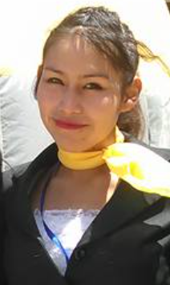

QA Manual y Automatizado
Experiencia en pruebas funcionales, diseño de casos de prueba, ejecución manual y automatización de pruebas para aplicaciones web y móviles.

QA Manual & Automatizado · Técnico Superior en Sistemas Informáticos
Soy Yesica Ofelia Zenteno Sullcani, Técnica Superior en Sistemas Informáticos con experiencia en QA manual y automatizado, así como en maquetación web con HTML y CSS. Me apasiona asegurar la calidad del software mediante pruebas funcionales, documentación clara y automatización de procesos. Me caracterizo por mi atención al detalle, responsabilidad y compromiso, aportando soluciones que mejoran la experiencia del usuario y la eficiencia de los equipos de desarrollo.
Experiencia en pruebas funcionales, diseño de casos de prueba, ejecución manual y automatización de pruebas para aplicaciones web y móviles.
Desarrollo de interfaces web con HTML y CSS puro, asegurando accesibilidad, estructura semántica y diseño responsive.